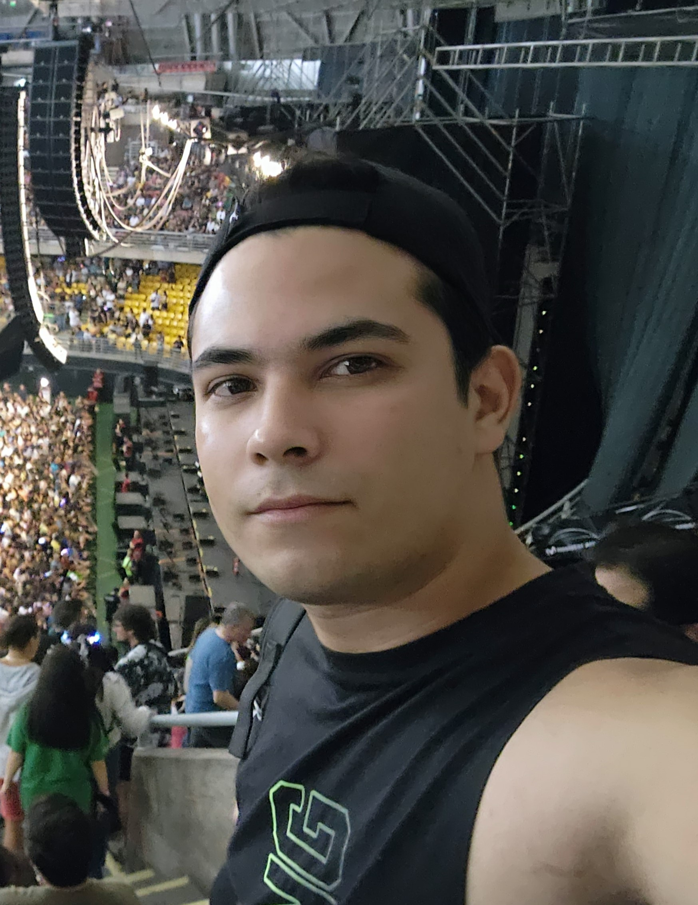

Curriculum Vitae

Mario Molina
Resumen
Originario de Mérida, Venezuela, a los 24 años emigra hacia Chile en busca de nuevas
oportunidades y crecimiento personal. Su trayectoria demuestra su capacidad para adaptarse a nuevos entornos.
Se considera una persona tranquila y curiosa, siempre dispuesta a explorar nuevos horizontes.
Además de su pasión por la música y la tecnología, aprecia las motos. Su enfoque
en la calidad del sonido y su amor por la música le brindan una perspectiva única en la creación de experiencias
auditivas inmersivas. Está entusiasmado por las oportunidades futuras y ansioso por contribuir con soluciones
creativas en el campo de la tecnología de la mano con el nuevo rubro laborar que es la pogramacion.
Datos personales
- Nombre: Mario Jose Molina Gutierrez
- Lugar de nacimiento: HULA Merida Venezuela
- Fecha de nacimiento: 02/03/1994
Formacion
Comenzo su formacion desde los 5años como todo niño promedio yendo al preescolar en donde se dedicaria al estudio
regular hasta los 21 años
- Primaria: Escuela basica Coronel Antonio Rangel 2001-2006
- Secundaria: Instituto tecnico San Javier del Valle Fe y Alegria Merida 2006-2012
- Universidad: Santiago Mariño Merida mension Electricidad 2013-2016
Experiancia laboral
- Empresa de seguridad y vigilancia Sistel Security Marida Venexuela 2011-2013: Instalación y mantenimiento de
sistemas de seguridad tales como alarmas Circuito cerrado y cercados eléctricos en áreas domesticas he
industriales 2011-2013
- Tecnoyoncle.ca Mérida Venezuela 2015-2017: empresa dedicada a la comercialización de quipos celulares y
Electrónicos enfocados al consumo multimedia
- Corporación Dental Navarro Cantón, Santo Domingo, Ecuador 2018: supervisor en el funcionamiento de clinicas
dentales en lo que respecta a su inmobiliario y maquinaria
- MKCGroup Edificio Forum, Santiago centro Providencia 2018-2020: • Instalador de sistemas de circuito
cerrados de televisión (CCTV), conocedor de todos los tipos de sistemas de seguridad necesarios asi como
también diversidad de sistemas de control de acceso y citofonia
Premios y Reconocimientos
- Certificación en sistemas CCTV y citofonía por parte de la empresa AUTOMATEK 2018
Habilidades y destrezas
- Instalación y mantención de sistemas eléctricos de seguridad (cctv, citofonía, control acceso)
- Instalación y mantención de puertas batientes, mamparas y quisio
- Instalación y mantención de computadores notebook y telefonia movil
- Tendido de cable de red rj45 e instalación de camaras IP y NVR
- Conocimientos básicos en informática (software y hardware) y lo que respecta a la misma rama
- Conocimientos de dibujo técnico eléctrico
- Instalar, reparar y mantener maquinaria o equipos eléctricos
- Realizar instalaciones eléctricas tanto residenciales como industriales
- Manejo de herramientas o instrumentos de medición y trabajo
- Interpretar y elaborar diagramas básicos de electricidad y electrónica
- Realizar mantenimiento preventivo y correctivo a maquinas o equipos eléctricos
- Capacidad para la búsqueda de alternativas y soluciones
- Habilidad para desempeñarse en las aéreas asociadas a la especialidad
- Instalación y manejo de citofonía alámbrica he inalámbrica con certificación de parte la empresa AUTOMATEK
Ir a perfil:


visita mi
portafolio